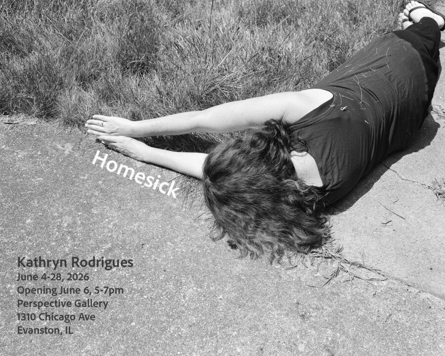

Kathryn Rodrigues: Homesick
Homesick, a solo exhibition by Perspective Gallery artist Kathryn Rodrigues, utilizes the performative self-portrait as a feminist act of claiming space, rewriting boundaries, and reimagining what it means to belong. Begun over five years ago, Homesick examines the contrast of Rodrigues’ multinational, transient upbringing with her current life parenting in a Chicago suburb. The images embody a spectrum of emotions: dark humor, maternal frustration, yearning, and hopefulness. They reveal both comfort and discomfort, acknowledging the contradictions of domesticity as both refuge and constraint.
“My work examines how we emotionally negotiate the spaces we inhabit, and how identity is formed within—and often against—the structures that shape our lives,” Rodrigues writes.
Ultimately, this work celebrates the moments of rootedness Rodrigues attempts to build after a lifetime of movement.